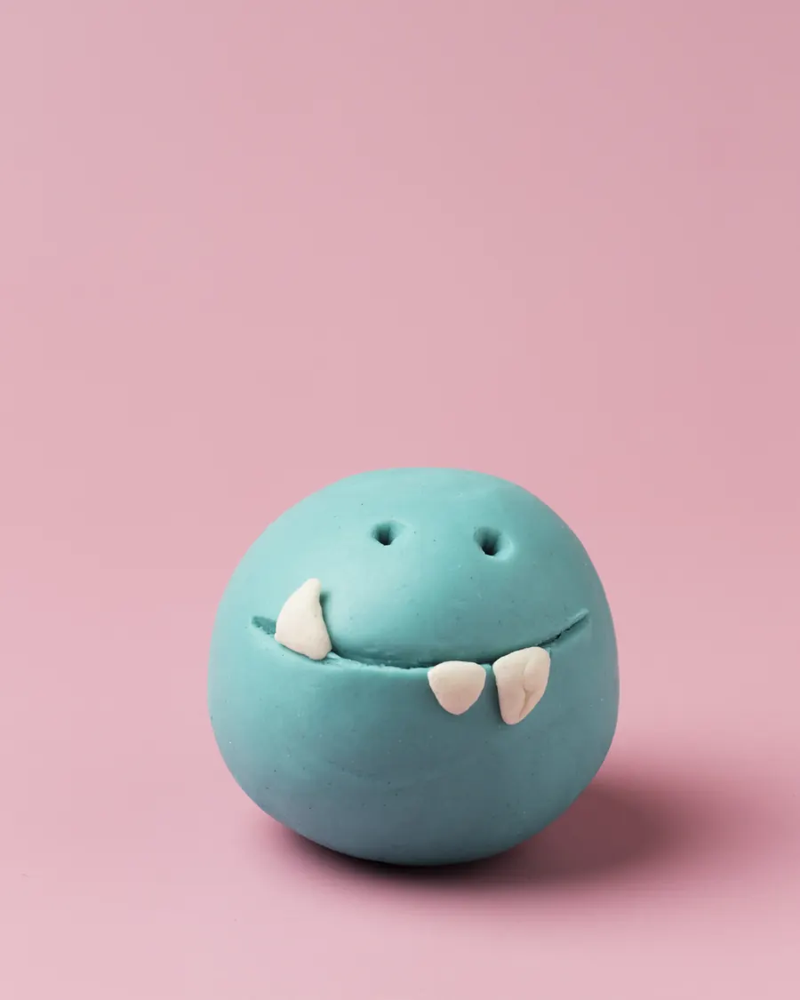
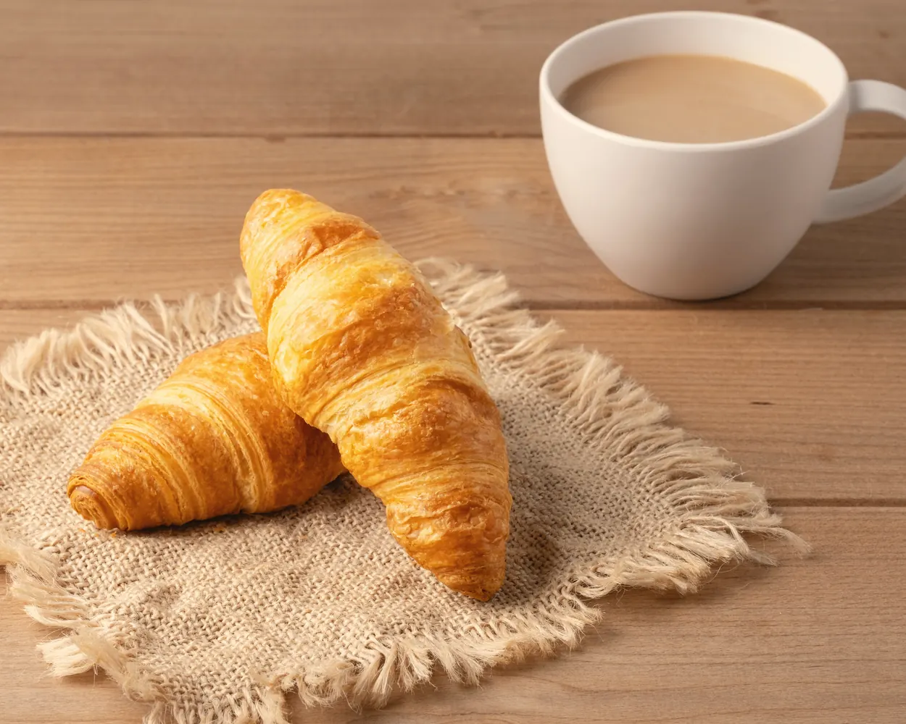
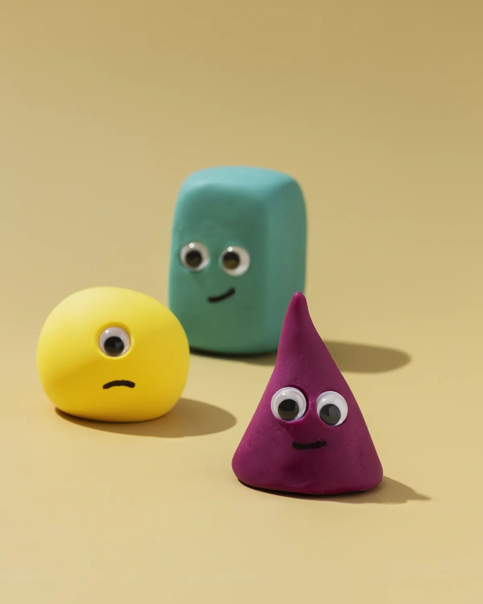
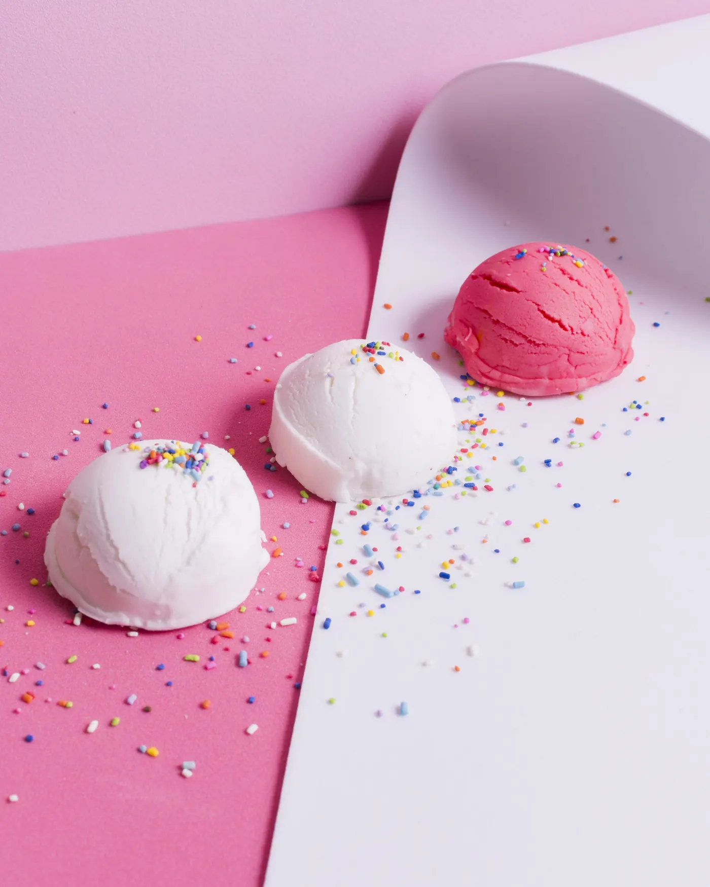
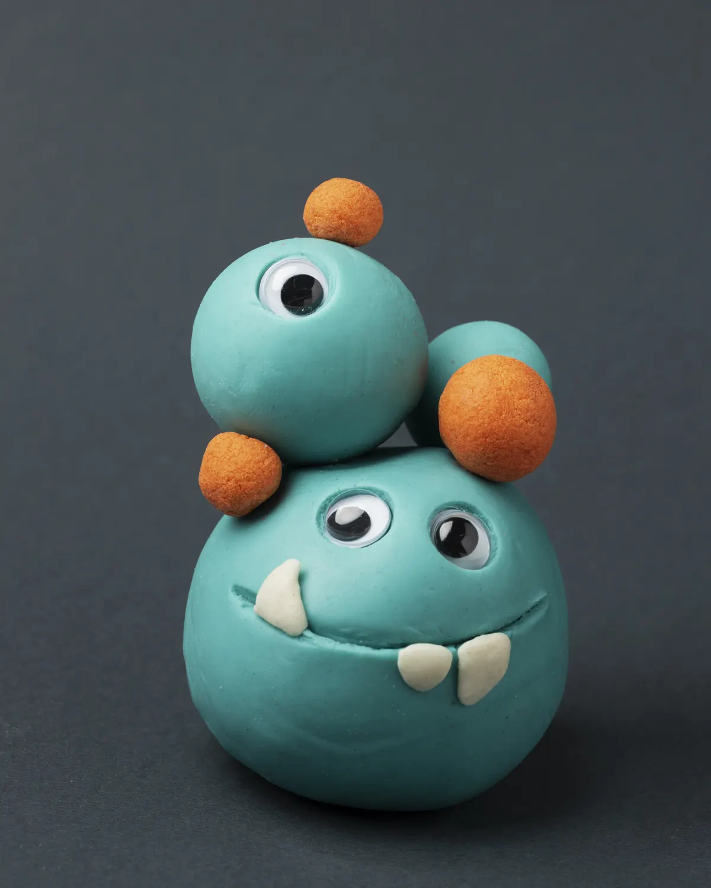
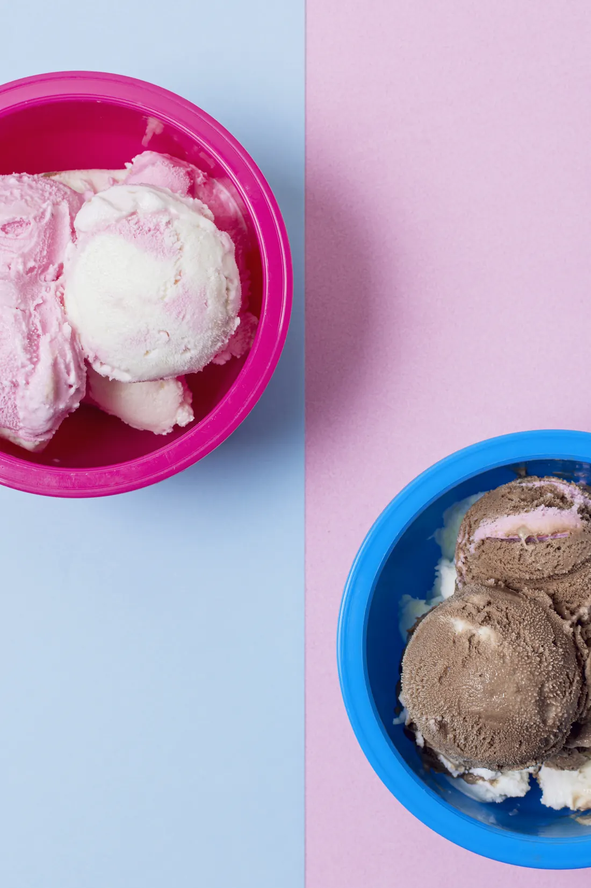

צילום מוצרים לחנויות אונליין
תמונות מוצר שמרגישות כמו צילום אחד: אותו יחס, אותה חדות וצבעים שמדברים זה עם זה. כך הלקוח מדפדף בקטלוג בלי שהצילום יפריע לו.








שמונה אריחי צילום עפים פנימה מקצות המסך בטשטוש אופקי, שורה אחת מימין ושורה אחת משמאל, ונעצרים ברשת מסודרת. בזמן הגלילה רואים את האריחים מתחדדים ומתיישבים במקום, כמו לוח השראה שמתמלא.
מתי משתמשים: תיק עבודות, גלריית מוצרים או חומרי השראה של סטודיו: שישה עד תשעה צילומים אמיתיים של העבודה. פעם אחת בעמוד, כדי שהרשת תגיע כמסקנה ולא כקישוט. עובד גם באתר שקט, כי הכול נגמר בסדר נקי.
הדמו כאן עיצובי-ניטרלי בכוונה. כשהמהלך נכנס לפרויקט, מיובאת רק ההתנהגות: הצבעים, הרדיוסים, הפונטים והצללים יורשים את העיצוב של אותו פרויקט.
תמונות מוצר שמרגישות כמו צילום אחד: אותו יחס, אותה חדות וצבעים שמדברים זה עם זה. כך הלקוח מדפדף בקטלוג בלי שהצילום יפריע לו.






assets/media/real), כל אחד img עם width ו-height מוגדרים, object-fit:cover וטעינה עצלה. בפרויקט מחליפים אותם בצילומי הלקוח ביחס 4:5 (ההתאמה נעשית בחיתוך, לכן אפשר לשלב גם צילום רחב). כשהמהלך רץ כל אריח מקבל פילטר SVG משלו (feGaussianBlur עם stdDeviation="X 0") וזז מקצה המסך אל מקומו. כיוון הכניסה מתחלף לפי שורה: שורה ראשונה מימין, שנייה משמאל. מספר העמודות נקרא מה-CSS, ולכן בטלפון (שתי עמודות) השורות מתחלפות בלי קוד נוסף. מרחק הכניסה מחושב מהמקום האמיתי של האריח (getBoundingClientRect פחות ה-x הנוכחי), כך שהאריח תמיד מתחיל מחוץ למסך. ההתאמה לתנועה: כל אריח מאט (expo.out) כשהוא מתקרב, והטשטוש יורד איתו. האריחים ברצף קצר אחד אחרי השני, והשורה השנייה מתחילה אחרי הראשונה. גלישה: האריחים מתחילים מחוץ למסך, לכן הסקשן שמחזיק את הרשת צריך overflow-x:clip (בדמו זה .stage:has(.pt)). באתר משמאל לימין מחליפים את סדר השורות: הראשונה משמאל. נגישות: לכל img יש alt שמתאר מה רואים בתמונה, והאריחים נשארים figure רגילים. טעינה: width ו-height שומרים מקום, כך שהרשת לא קופצת כשהתמונות מגיעות, והמרחק המחושב לכל אריח לא תלוי בטעינה. פילטר SVG על אלמנט HTML חלש יותר ב-Safari.הקוד כאן עומד בפני עצמו. כל טוקן עיצוב נושא ברירת מחדל, מחלקות העזר של המאגר מוטמעות בו, ותגי הסקריפט מסודרים לפי הסדר הנכון. פרויקט שמגדיר --accent או --line משלו יורש אותם אוטומטית. הרכיב הזה מסתמך על dir="rtl".
/* מחלקות עזר של המאגר שהרכיב הזה משתמש בהן */
.stage{padding:var(--sec, clamp(120px, 12vw, 260px)) var(--gutter, clamp(24px, 5vw, 96px));position:relative}
.stage.tight{padding-block:clamp(48px,5vw,90px)}
.stage.full{padding-inline:0}
/* G188 · אריחי תמונה שנכנסים בטשטוש לרשת מסודרת */
.stage:has(.pt){overflow-x:clip}
.pt{display:grid;gap:clamp(32px,5vw,64px);max-width:1040px;margin-inline:auto}
.pt-txt{display:grid;gap:14px;max-width:44ch}
.pt-txt h2{margin:0;font-size:clamp(28px,3.4vw,52px);line-height:1.1;font-weight:700;text-wrap:balance}
.pt-txt p{margin:0;color:var(--muted, #6a6d85);font-size:var(--fs-body, clamp(17px, 0.6vw + 0.7rem, 22px));line-height:1.6}
.pt-grid{display:grid;grid-template-columns:repeat(4,minmax(0,1fr));gap:12px}
.pt-t{margin:0;position:relative;aspect-ratio:4 / 5;border-radius:18px;overflow:hidden;background:var(--card, #fff)}
.pt-t img{display:block;width:100%;height:100%;object-fit:cover;object-position:var(--p,50% 50%)}
@media(max-width:767px){.pt-grid{grid-template-columns:repeat(2,minmax(0,1fr))}}<div class="stage"><div class="pt">
<div class="pt-txt">
<h2>צילום מוצרים לחנויות אונליין</h2>
<p>תמונות מוצר שמרגישות כמו צילום אחד: אותו יחס, אותה חדות וצבעים שמדברים זה עם זה. כך הלקוח מדפדף בקטלוג בלי שהצילום יפריע לו.</p>
</div>
<div class="pt-grid">
<figure class="pt-t"><img src="https://liavwebdesign-spec.github.io/motion-vault/assets/media/real/s04/tusk.webp" width="900" height="1125" alt="כדור בצק בטורקיז עם שני ניבים לבנים על רקע ורוד" loading="lazy" decoding="async"></figure>
<figure class="pt-t"><img src="https://liavwebdesign-spec.github.io/motion-vault/assets/media/real/s15/flute.webp" width="1000" height="1250" alt="כוס שמפניה עם משקה בצבע ענבר, נצנצי זהב ופרוסת לימון מיובשת" loading="lazy" decoding="async"></figure>
<figure class="pt-t"><img src="https://liavwebdesign-spec.github.io/motion-vault/assets/media/real/s11/magenta-cone.webp" width="1000" height="1000" alt="גביע וופל ריק בצבע מג'נטה על רקע מחולק למנטה ולוורוד" loading="lazy" decoding="async" style="--p:38% 50%"></figure>
<figure class="pt-t"><img src="https://liavwebdesign-spec.github.io/motion-vault/assets/media/real/s14/croissants.webp" width="1250" height="1000" alt="שני קרואסונים על מפית יוטה לצד כוס קפה עם חלב" loading="lazy" decoding="async" style="--p:40% 50%"></figure>
<figure class="pt-t"><img src="https://liavwebdesign-spec.github.io/motion-vault/assets/media/real/s04/trio.webp" width="1200" height="1500" alt="שלוש דמויות בצק בצהוב, בטורקיז ובסגול על רקע חרדל" loading="lazy" decoding="async"></figure>
<figure class="pt-t"><img src="https://liavwebdesign-spec.github.io/motion-vault/assets/media/real/s11/hero-scoops.webp" width="1400" height="1750" alt="שלושה כדורי גלידה עם סוכריות צבעוניות על רקע ורוד ולבן" loading="lazy" decoding="async"></figure>
<figure class="pt-t"><img src="https://liavwebdesign-spec.github.io/motion-vault/assets/media/real/s04/hero-monster.webp" width="1200" height="1500" alt="פסל בצק בטורקיז עם עין אחת וכדורים כתומים על רקע אפור כהה" loading="lazy" decoding="async"></figure>
<figure class="pt-t"><img src="https://liavwebdesign-spec.github.io/motion-vault/assets/media/real/s11/bowls.webp" width="1100" height="1650" alt="שתי קערות גלידה, ורודה וכחולה, מצולמות מלמעלה על רקע דו צבעי" loading="lazy" decoding="async" style="--p:50% 35%"></figure>
</div>
</div></div>if (typeof gsap !== "undefined") gsap.registerPlugin(ScrollTrigger);
(function(){
if(typeof gsap==="undefined"||typeof ScrollTrigger==="undefined")return; // בלי GSAP הרשת כבר במקום
const grid=document.querySelector(".pt-grid"),tiles=[...grid.children];
// בהפחתת תנועה הפונקציה לא רצה, והאריחים במקומם
gsap.matchMedia().add("(prefers-reduced-motion: no-preference)",()=>{
const NS="http://www.w3.org/2000/svg",svg=document.createElementNS(NS,"svg");
svg.setAttribute("width","0");svg.setAttribute("height","0");svg.setAttribute("aria-hidden","true");svg.style.position="absolute";
const B=tiles.map((tile,i)=>{
const f=document.createElementNS(NS,"filter"),g=document.createElementNS(NS,"feGaussianBlur");
f.setAttribute("id","pt-f"+i);f.setAttribute("x","-60%");f.setAttribute("y","-10%");f.setAttribute("width","220%");f.setAttribute("height","120%");
f.setAttribute("color-interpolation-filters","sRGB");g.setAttribute("stdDeviation","0 0");f.appendChild(g);svg.appendChild(f);
return{v:0,g:g,el:tile,id:"pt-f"+i};
});
const blur=o=>{o.g.setAttribute("stdDeviation",o.v.toFixed(1)+" 0");o.el.style.filter=o.v>.4?"url(#"+o.id+")":"none";};
grid.appendChild(svg);
const cols=()=>getComputedStyle(grid).gridTemplateColumns.split(" ").length;
const dirOf=i=>Math.floor(i/cols())%2?-1:1; // שורה ראשונה נכנסת מימין, שנייה משמאל, וחוזר חלילה
// מרחק הכניסה: עד שהאריח כולו מחוץ למסך, לפי המקום האמיתי שלו בלי ה-x הנוכחי
const off=(tile,dir)=>{
const r=tile.getBoundingClientRect(),base=r.left-(+gsap.getProperty(tile,"x")||0);
return dir>0?innerWidth-base+24:-(base+r.width+24);
};
const tl=gsap.timeline({scrollTrigger:{trigger:grid,start:"top 85%",end:"top 25%",scrub:.6,invalidateOnRefresh:true}});
tiles.forEach((tile,i)=>{
const at=(i%4)*.12+Math.floor(i/4)*.45;
tl.fromTo(tile,{x:()=>off(tile,dirOf(i))},{x:0,duration:1.1,ease:"expo.out"},at)
.fromTo(tile,{opacity:0},{opacity:1,duration:.3,ease:"power1.out"},at)
.fromTo(B[i],{v:36},{v:0,duration:1.1,ease:"expo.out",onUpdate:()=>blur(B[i])},at);
});
// אחרי רענון (שינוי גודל חלון) הטיימליין חוזר למקומו בלי להפעיל onUpdate, אז מסנכרנים את הטשטוש מהערכים
const sync=()=>B.forEach(blur);
ScrollTrigger.addEventListener("refresh",sync);
return()=>{ScrollTrigger.removeEventListener("refresh",sync);svg.remove();gsap.set(tiles,{clearProps:"all"});};
});
})();